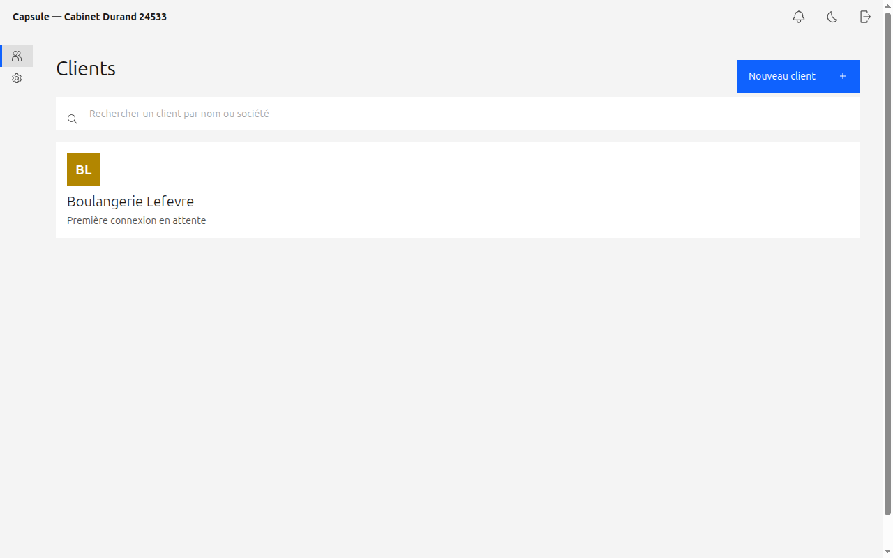
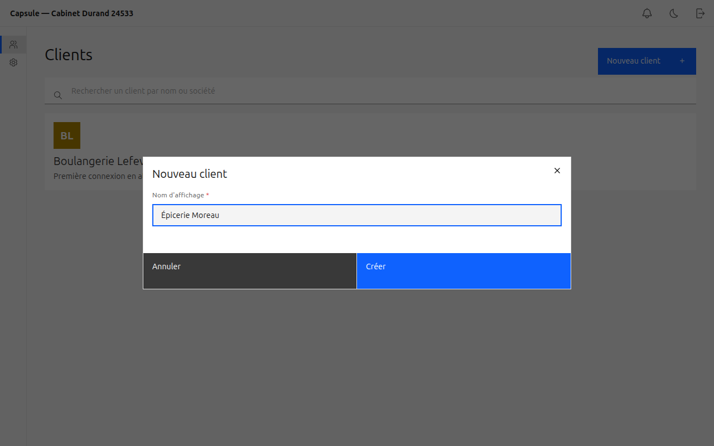
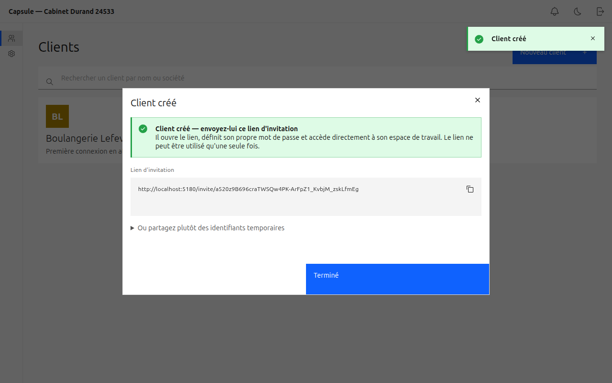
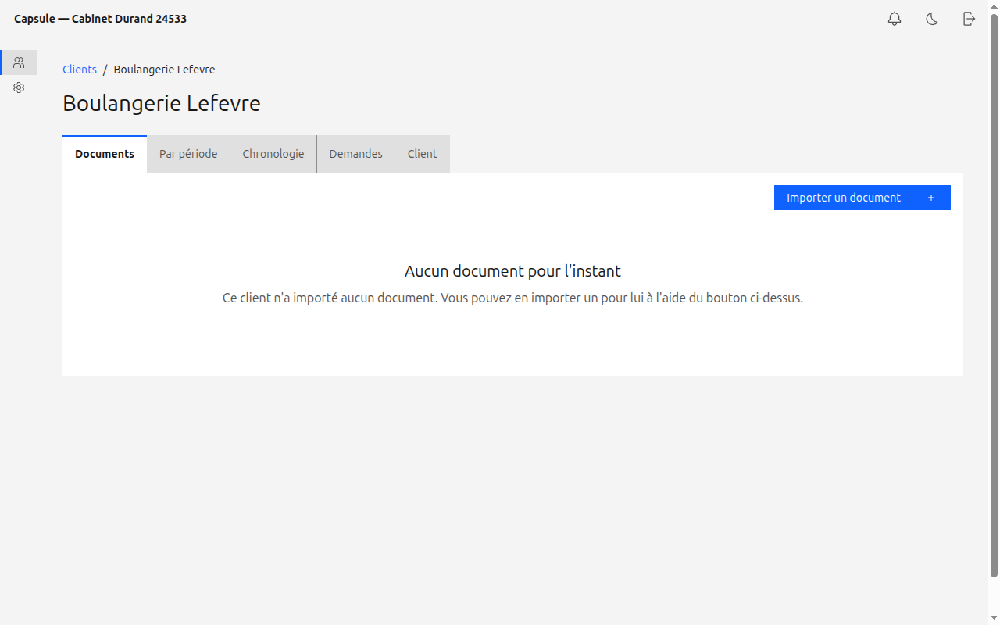
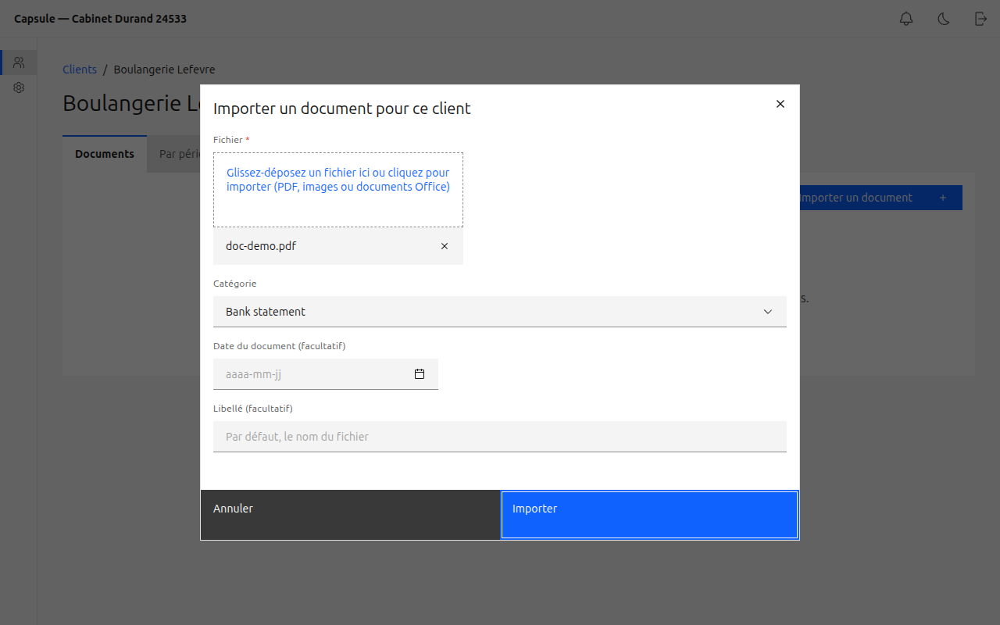
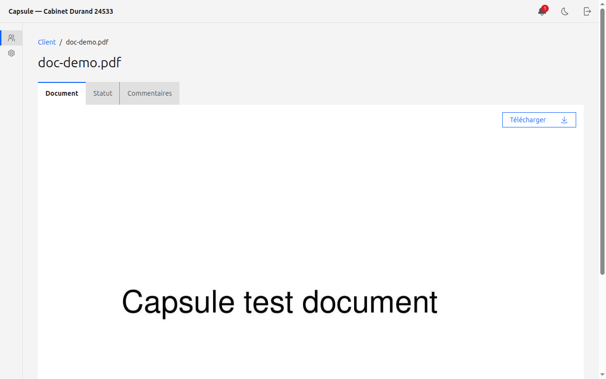
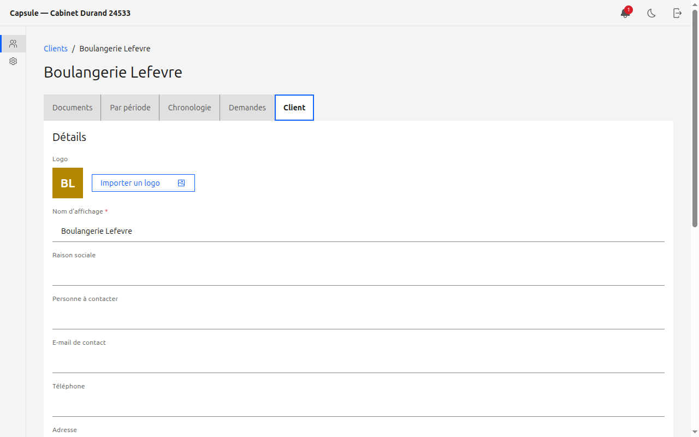
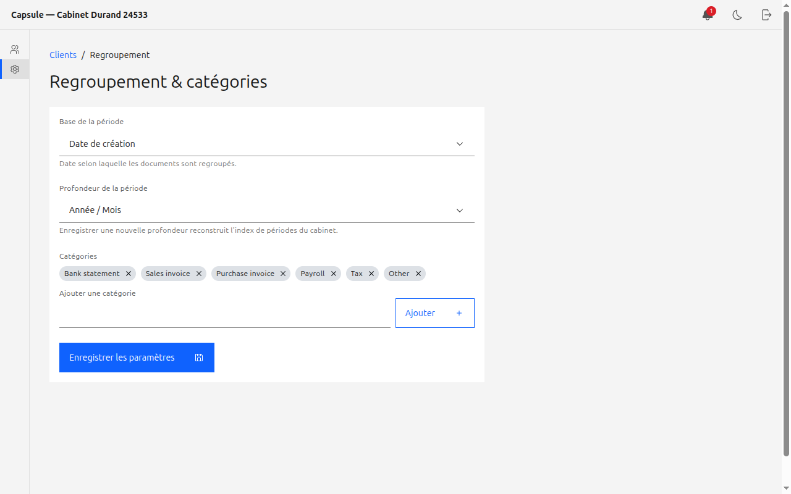

Capsule est votre portail sécurisé pour recevoir et organiser les documents de vos
clients. Ce guide vous accompagne, étape par étape : créer un client, l'inviter,
importer et suivre ses documents, gérer son dossier, et configurer le classement.
Comptable — vousClient — votre client qui dépose ses documentsAdresse — capsule.kiloctet.com
Saisissez votre nom d'utilisateur et votre mot de passe (fournis par l'administrateur du cabinet).
Cliquez sur Se connecter. Vous arrivez sur la page Clients.
La page de connexion.
À votre première connexion, changez votre mot de passe si le système vous le demande, puis conservez-le en lieu sûr.
02
Créer un client et envoyer l'invitation
Sur la page Clients, cliquez sur Nouveau client (en haut à droite).
Saisissez le Nom d'affichage du client (par exemple « Boulangerie Lefèvre »).
Cliquez sur Créer.
Capsule affiche un lien d'invitation à usage unique. Copiez-le et envoyez-le à votre client (par e-mail, message…).

La grille de vos clients, avec la recherche et le logo de chaque client.

Créer un nouveau client.

Le lien d'invitation à envoyer au client. Il n'est utilisable qu'une seule fois.
Votre client ouvre le lien, choisit son mot de passe et accède directement à son espace pour déposer ses documents. Vous n'avez rien à installer de leur côté.
03
Importer un document pour un client
Vous pouvez déposer un document à la place d'un client (par exemple un document que vous avez reçu par un autre canal).
Ouvrez le client depuis la grille Clients.
Dans l'onglet Documents, cliquez sur Importer un document.
Choisissez le fichier (PDF, image ou document Office), une catégorie et la date du document.
Cliquez sur Importer. Le document apparaît dans la liste, avec la colonne Importé par indiquant votre nom.

L'espace d'un client : onglets Documents, Par période, Chronologie, Demandes et Client.

Importer un document pour ce client.
Seuls les formats PDF, images et documents Office sont acceptés.
04
Consulter, classer et suivre les documents
Documents — la liste de tous les documents du client, avec leur statut et leur auteur.
Par période — les documents regroupés par année / mois selon la configuration du cabinet.
Chronologie — l'historique des dépôts, du plus récent au plus ancien.
Demandes — demandez au client les documents manquants ; il les voit dans sa liste de tâches.
Cliquez sur un document pour l'ouvrir : l'onglet Document affiche l'aperçu et permet de le Télécharger ; les onglets Statut et Commentaires permettent le suivi et les échanges.

L'aperçu d'un document, avec le bouton Télécharger et les onglets Statut et Commentaires.
05
Gérer le dossier du client
Dans l'espace du client, ouvrez l'onglet Client.
Détails — renseignez la raison sociale, le contact, l'e-mail, le téléphone, l'adresse, le numéro fiscal, et importez un logo. Cliquez sur Enregistrer.
Comptes — ajoutez un compte employé (chaque employé reçoit son propre lien d'invitation et partage les documents du client), réinitialisez un mot de passe, ou désactivez / retirez un compte.
Zone de danger — désactivez le client (bloque ses accès sans supprimer les documents) ou supprimez-le définitivement.

L'onglet Client : détails, comptes de connexion et zone de danger.
Plusieurs comptes par client : une entreprise cliente peut avoir plusieurs employés qui déposent des documents ; chaque dépôt indique qui l'a importé.
06
Configurer le regroupement
Dans le menu de gauche, cliquez sur Regroupement.
Choisissez la base de période (date de création, d'import, ou date du document) et la profondeur (Année, Année / Mois, ou Année / Trimestre / Mois).
Gérez la liste des catégories proposées lors de l'import.
Cliquez sur Enregistrer.

Les paramètres de regroupement et les catégories du cabinet.